A-01대지 분석도
땅을 읽습니다
설계는 땅에서 시작합니다. 해가 어디서 떠서 어디로 지는지, 바람이 어느 쪽에서 오는지, 옆집 창이 어디를 보는지부터 확인합니다.
현장 답사, 측량, 일조 분석까지 2주
산출물대지 분석도, 일조 다이어그램

A-01대지 분석도
설계는 땅에서 시작합니다. 해가 어디서 떠서 어디로 지는지, 바람이 어느 쪽에서 오는지, 옆집 창이 어디를 보는지부터 확인합니다.
현장 답사, 측량, 일조 분석까지 2주
산출물대지 분석도, 일조 다이어그램
A-021층 평면도
가족이 하루를 보내는 순서대로 평면을 그립니다. 현관에서 부엌까지 몇 걸음인지, 마당 쪽 큰 창이 남쪽을 보는지, 선 하나마다 이유를 적어 둡니다.
평면 스케치 세 가지 안을 놓고 함께 고릅니다
산출물평면도 세 가지 안, 면적표
A-03단면도
아이 방과 부부 침실은 2층에 올리고, 계단은 식탁에서 보이는 자리에 둡니다. 구조와 단열은 이 단계에서 시공사와 함께 검토합니다.
구조 검토와 에너지 계획 포함
산출물단면도, 구조 검토서
A-04지붕 평면도
박공지붕의 기울기는 눈과 비, 그리고 다락의 높이로 정합니다. 마당에는 여름 그늘이 될 나무 자리를 미리 비워 둡니다.
지붕 경사 35도, 처마 550mm
산출물지붕 평면도, 입면도 4면
A-05분해 조감도
식탁과 소파, 침대를 실제 크기로 놓아 보고 동선을 확인합니다. 장 본 짐을 들고 현관에서 부엌까지 가는 길은 짧을수록 좋습니다.
현관에서 부엌까지 3.5m 안쪽으로 잡습니다
산출물가구 배치도, 동선도
A-06완성 조감도
준공 날 창에 불이 켜지는 순간까지 함께합니다. 입주한 뒤 1년 동안은 계절이 바뀔 때마다 집을 다시 살펴봅니다.
입주 후 1년, 계절마다 하자 점검
산출물준공 도서, 1년 하자 점검표
단독주택 다섯 채와 작은 가게 두 곳입니다. 이름을 누르면 평면도와 설명이 펼쳐집니다. 행에 마우스를 올리면 평면도가 먼저 그려집니다.
| 연도 | 이름 | 위치 | 용도 | 면적 |
|---|---|---|---|---|
| 2026 | 경기 양평군 | 단독주택 | 142㎡ | |
강이 보이는 북쪽 경사지에 앉힌 2층 박공집입니다. 거실 창은 남쪽 마당으로 돌리고, 강 쪽으로는 긴 툇마루를 냈습니다.
|
||||
| 2025 | 서울 서대문구 | 단독주택 | 118㎡ | |
34평 땅에 지은 3층 협소주택입니다. 계단을 집 한가운데 두어 세 식구가 어느 층에 있어도 목소리가 닿게 했습니다.
|
||||
| 2025 | 서울 성동구 | 근린생활시설 | 86㎡ | |
모퉁이 두 면을 통유리로 열고 바를 대각선으로 놓았습니다. 줄이 길어져도 출입문 앞이 막히지 않습니다.
|
||||
| 2024 | 제주 서귀포시 | 숙박시설 | 96㎡ | |
돌담 안쪽에 두 동을 나눠 앉히고 데크로 이었습니다. 두 팀이 머물러도 서로의 마당이 보이지 않습니다.
|
||||
| 2024 | 서울 마포구 | 상가 인테리어 | 54㎡ | |
폭 4.5m 좁은 가게라 오븐을 길 쪽 창 앞으로 내놓았습니다. 빵 굽는 모습이 그대로 간판이 됩니다.
|
||||
| 2023 | 경기 파주시 | 다가구주택 | 210㎡ | |
부모님 세대와 아들 세대가 마당 하나를 나눠 쓰는 집입니다. 현관은 따로 두고, 두 집의 부엌 창은 마당을 사이에 두고 마주 봅니다.
|
||||
| 2023 | 강원 춘천시 | 단독주택 | 74㎡ | |
도예가 부부의 작업실 겸 집입니다. 가마가 있는 작업동과 살림채 사이에 지붕 덮인 마당을 두어 비 오는 날에도 작업을 이어 갑니다.
|
||||
첫 상담부터 준공까지 보통 열 달에서 열두 달이 걸립니다. 단계마다 무엇을 정하는지 미리 알려 드리고, 정한 것은 다시 묻지 않습니다.
땅과 예산, 가족의 하루를 듣습니다. 대지 주소가 있으면 지을 수 있는 규모를 먼저 짚어 드립니다.
평면과 모형으로 집의 큰 틀을 정합니다. 세 가지 안을 펼쳐 놓고 함께 고릅니다.
현장에서 쓰는 도면 120여 장을 그립니다. 창호와 단열, 마감 재료를 이때 확정합니다.
매주 현장에 나가 도면대로 지어지는지 확인합니다. 감리 일지는 건축주와 같이 봅니다.
사용승인과 입주를 돕고, 1년 동안 계절마다 하자를 점검합니다.
평수를 옮기면 평면 예시와 설계비 범위가 함께 바뀝니다. 대지와 용도에 따라 달라지니 대략의 감으로 봐 주세요.
예시 금액이며 부가세는 별도입니다. 구조 설계와 인테리어 설계는 따로 견적을 드립니다.
설계 상담 신청대지 주소나 지번만 알려 주셔도 첫 상담에서 일조와 지을 수 있는 면적을 대략 짚어 드립니다. 상담은 무료이고 한 시간쯤 걸립니다.
땅 사진 몇 장만 들고 갔는데, 첫 미팅에서 해가 드는 방향부터 그려 주셨어요. 그 그림이 지금 우리 집 거실 창이 됐습니다.